All in One View
Content from Introduction to multi-omics
Last updated on 2026-10-13 | Edit this page
Overview
Questions
- What is multi-omics data?
- Why do we study the microbiome with a multi-omics approach?
- Where does multi-omics data come from, and what does that mean for the analysis?
- What kinds of questions can multi-omics methods answer?
Objectives
- Explain what multi-omics data is, using microbiota, metabolites and host biomarkers as an example.
- Give reasons why the microbiome is studied together with other data types, and what a single microbiome table cannot tell.
- Describe how microbiome, metatranscriptomics, metabolomics and host data are generated, and why each data type needs its own preparation.
- Identify problems of study design in a multi-omics study: unmatched samples, batch effects and missing data types.
- Name the three groups of integration methods (exploratory, unsupervised and supervised) and the question each one answers.
Where are we?
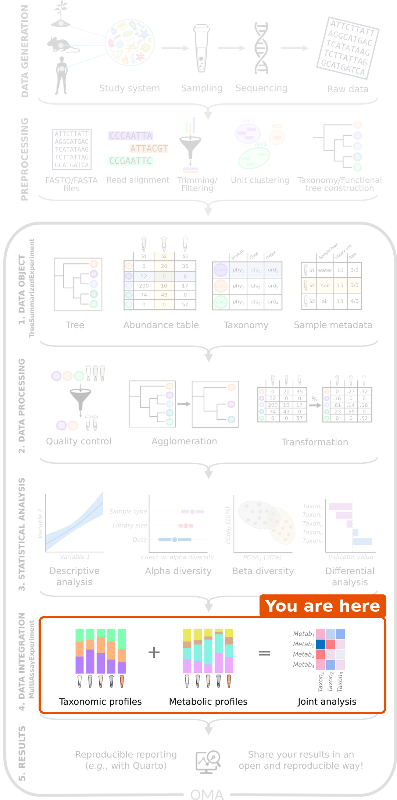
A typical microbiome analysis works with one table: the abundances of taxa in each sample. We import the data, prepare it, and compare diversity and taxa between groups.
This lesson covers the data integration step of the workflow: we combine the microbiome with other data types measured from the same samples, and ask how the data types are related.
Recap: what we assume you know
- A
TreeSummarizedExperiment(TreeSE) stores one table: features (taxa) as rows, samples as columns, sample information incolData()and taxonomy inrowData(). - We agglomerate taxa with
agglomerateByRank(), keep the prevalent ones withsubsetByPrevalent()and transform the counts withtransformAssay(). Microbiome data is compositional, so we use relative abundances or the rclr transformation. - Ordination (PCA, PCoA) shows the main patterns in the samples.
- Machine learning predicts an outcome; we judge a model on test data or with cross-validation, for example with the AUC.
This lesson builds on all of these. They are covered in the microbiome lesson and in the OMA book.
What is multi-omics?
The word omics refers to measuring many molecules of one kind at once: genes (genomics), RNA (transcriptomics), proteins (proteomics) or metabolites (metabolomics). Multi-omics data contains several such data types, all measured from the same samples.
Each data type looks at the samples from a different angle:
| Data type | Question it answers | Example |
|---|---|---|
| Taxonomic profile | Who is there? | Abundance of each bacterial genus |
| Functional profile | What can they do? | Abundance of each metabolic pathway |
| Metatranscriptome | What are they doing now? | Expression of each microbial gene |
| Metabolites | What do they produce? | Concentration of each metabolite |
| Host data | How does the host respond? | Gene expression, immune markers |
By combining the data types, we can ask questions that no single table can answer. For example: which bacteria go together with the short-chain fatty acids in the gut, and are both linked to the health of the host?
Why study the microbiome with multi-omics?
A typical microbiome study finds taxa that differ between healthy people and patients. Such a result raises new questions: what do these bacteria do, and how could they affect the host? A table of taxa cannot answer them, for several reasons:
- Who is there is not what they do. Different bacteria can carry out the same function (functional redundancy), and strains of the same species can carry different genes. Two people with different taxa can have a gut that works in the same way, and two people with the same taxa can differ.
- The microbiome acts through molecules. Gut bacteria affect the host mostly through what they produce or use. For example, bacteria ferment dietary fibre into short-chain fatty acids (SCFA), such as butyrate, which feeds the cells of the gut wall and calms inflammation. Measuring the metabolites shows this activity directly.
- The host is part of the system. The host shapes the microbiome through its diet, immune system and genes, and the microbiome affects the host in return. The host and its microbes are often studied as one system, the holobiont; the study of their genomes and molecules together is called hologenomics.
- Towards mechanisms. A chain such as diet → bacteria → metabolite → host response can only be studied when all its links are measured. Each data type alone gives one link; together, they suggest how the links fit.
- Stronger evidence. A finding that shows up consistently in several data types, measured with different methods, is more convincing than a finding in one table.
Multi-omics does not prove causation on its own: it is still observational data, with the same pitfalls as any observational study. But it narrows down the possible explanations, and points to the experiments worth doing.
Where does the data come from?
How each data type is measured
Each data type comes from its own laboratory method, and the method decides what the numbers mean:
- 16S amplicon sequencing amplifies and sequences one marker gene. It gives read counts of taxa, usually reliable down to the genus.
- Shotgun metagenomics sequences all DNA in the sample. It gives read counts of taxa (often species) and of genes or metabolic pathways: what the microbes can do.
- Metatranscriptomics sequences the RNA of the microbes. It gives read counts of expressed genes: what the microbes are doing at the time of sampling.
- Metabolomics measures small molecules, with nuclear magnetic resonance (NMR) spectroscopy or mass spectrometry (LC-MS, GC-MS). It gives concentrations or intensities of metabolites.
- Host data can be, for example, gene expression of host tissue (RNA-seq) or clinical and lab biomarkers, such as a blood test, each in its own unit.
Before we get the tables, each data type goes through its own preprocessing. Sequencing reads are quality filtered and assigned to taxa or genes. Metabolomics spectra are processed into peaks, and the peaks are identified and quantified. This lesson starts from the finished tables.
Some differences matter for the analysis:
- Counts or concentrations. Sequencing gives counts whose total depends on the sequencing depth, so only the proportions are meaningful (compositional data). Metabolite concentrations and biomarkers are absolute values. The data types therefore need different transformations.
- Skewed values. Counts, concentrations and intensities often have a few very high values. A logarithm makes them closer to normally distributed.
- Targeted or untargeted. Targeted metabolomics measures a chosen list of known metabolites. Untargeted metabolomics measures everything it can detect, including unknown molecules. Untargeted tables have many more features and many more missing values.
-
Missing values. A metabolite below the
detection limit of the instrument is often reported as
missing (
NA). Such a value is not unknown: it is small. A value that is missing because a measurement failed is different, and must not be replaced with a small number.
Tables from the same reads
Some multi-omics tables come from different measurements, for example DNA sequencing of stool and NMR spectroscopy of the same stool. Others are computed from the same sequencing reads: shotgun metagenomics gives both taxa (for example with MetaPhlAn) and genes or metabolic pathways (for example with HUMAnN). Such tables are strongly related by construction: a pathway is abundant because the taxa that carry it are abundant. They are still useful, but remember this when you interpret the results.
Planning a multi-omics study
Matching the samples
To combine the data types, we must know which measurements belong together. They can come from:
- the same sample, for example DNA and metabolites from the same gut content;
- the same subject, but different samples, for example stool for the microbiome and blood for the biomarkers;
- the same subject at different time points, for example before and after a diet.
In the next episode, we will see how R keeps track of this.
Batches, missing data and sample size
Plan a multi-omics study before you collect the samples:
- Batch effects. Samples measured on different days or runs can differ for technical reasons. Mix the study groups across the batches, so that the batch is not confounded (mixed up) with the groups.
- Missing data types. Some samples fail in one of the measurements. Most integration methods use only the samples that have all data types.
- More samples. Multi-omics data has many features and usually few samples. Integration methods usually need more samples than the analysis of a single table.
Three groups of integration methods
There are many multi-omics methods. In this lesson, we group them by the question they answer:
| Group | Question | Methods in this lesson | Episode |
|---|---|---|---|
| Exploratory | Are the data types related, and which features go together? | Mantel test, MiRKAT, pairwise association | Exploratory methods |
| Unsupervised | What are the main patterns that the data types share? | Joint RPCA, MOFA | Unsupervised methods |
| Supervised | Can we predict an outcome from all data types, and which features predict it? | IntegratedLearner, DIABLO | Supervised methods |
Unsupervised methods do not know the study groups: they look for patterns in the data alone, like a PCA or PCoA of a single table. Supervised methods are given an outcome, such as the diet, and look for the features that predict it, like machine learning on a single table.
Before any of this, we need to store the data types together. That is the topic of the next episode.
Challenge 1: Which group of methods?
A study measured the gut bacteria, the gut metabolites and blood biomarkers of mice that were fed a high-fat or a low-fat diet. Which group of methods from the table above would you use for each question?
- Are the gut bacteria related to the metabolites in the gut at all?
- We want one figure that shows how the mice differ, based on all three data types, without telling the method which diet each mouse had.
- Can we tell from the bacteria and the metabolites which diet a mouse had, and which features tell it?
- Which bacterial genera go together with butyrate, a short-chain fatty acid?
- Exploratory, for example the Mantel test.
- Unsupervised, for example MOFA or joint RPCA.
- Supervised, for example IntegratedLearner or DIABLO.
- Exploratory: pairwise associations between butyrate and every genus.
Challenge 2: Beyond the taxa
A microbiome study found that the genus Faecalibacterium is less abundant in people with inflammatory bowel disease (IBD) than in healthy people.
- Which question from the first table (who, what can they do, what do they produce, how does the host respond) does this result answer?
- Which other data types would you measure to find out how the genus could matter for the disease? What would each of them tell?
- Why would a result that is consistent across these data types be more convincing than the taxa alone?
- Who is there.
- For example: a functional profile from shotgun metagenomics (do the bacteria of patients carry fewer genes for butyrate production?), metabolomics of stool (is there less butyrate?), and host data such as inflammation markers in blood or gut tissue (is lower butyrate linked to more inflammation?). Together, they test the chain bacterium → metabolite → host.
- Each data type is measured with a different method and has its own errors. When several of them point to the same explanation, chance and technical artefacts become less likely. It is still not proof of cause, but it points to the experiment worth doing next.
Challenge 3: Plan the preparation
A study has stool and blood samples from 100 people. The stool was sequenced with shotgun metagenomics and measured with untargeted mass spectrometry metabolomics. The blood was used for clinical biomarkers.
- Which of the tables are compositional? Why does this matter when you choose how to transform them?
- Many metabolite values are missing. When is it reasonable to replace them with a small value?
- Do the microbiome and the biomarkers come from the same sample?
- The metabolomics was run in two batches: the first 50 people were healthy, the last 50 were patients. What is the problem?
- Only the taxa are compositional: their total depends on the sequencing depth, so only the proportions are meaningful. They need a compositional transformation, such as relative abundance or rclr. The metabolites and the biomarkers are absolute values, so they are transformed in other ways, for example with a logarithm or standardization.
- When they are missing because they were below the detection limit. Then the true value is small. If a measurement failed, the value is unknown.
- No. They come from the same person, but from different samples (stool and blood).
- The batch is confounded with the health status. A difference between the batches cannot be told apart from a difference between healthy people and patients. The groups should be mixed across the batches.
- Multi-omics data contains several data types measured from the same samples. Each data type looks at the samples from a different angle.
- A table of taxa tells who is there, but not what the bacteria do or how the host responds. Multi-omics links the microbiome to its functions, its metabolites and the host, and points towards mechanisms.
- Each data type is generated with its own method, and needs its own preparation. Microbiome counts are compositional; metabolites and biomarkers are not.
- Tables computed from the same reads, such as taxa and pathways, are related by construction.
- Multi-omics studies need matched samples, groups mixed across batches, and enough samples with all data types.
- Exploratory methods test whether the data types are related, unsupervised methods find shared patterns, and supervised methods predict an outcome from all data types.
Content from MultiAssayExperiment and the study data
Last updated on 2026-10-13 | Edit this page
Overview
Questions
- What data do we analyse in this lesson?
- How do we store several data types of the same samples in R?
- How do we find out which samples have which data types?
- How do we prepare each data type for integration?
Objectives
- Describe the study design and the three data types of the HintikkaXO data.
- Describe the parts of a
MultiAssayExperiment: the experiments, the sample information and the sample map, and how they differ from aTreeSummarizedExperiment. - Access, explore and subset the experiments of a
MultiAssayExperiment. - Use an UpSet plot to see which samples have which data types, and keep only the samples that have all of them.
- Prepare each data type for integration, and explain why each data type gets its own transformation.
Where are we?
In a microbiome analysis, the first step is to store the data in one
object, a TreeSummarizedExperiment (TreeSE). Integration
starts the same way: we store all data types in one
object, and prepare each of them for the analyses of the next
episodes.
The study
We use data from a diet experiment in rats (Hintikka et al. 2021). Forty rats were fed one of four diets for several weeks:
| No supplement | XOS supplement | |
|---|---|---|
| Low-fat diet | 10 rats | 10 rats |
| High-fat diet | 10 rats | 10 rats |
A high-fat diet causes obesity and fatty liver. Xylo-oligosaccharides (XOS) are a prebiotic: a fibre that humans and rats cannot digest, but some gut bacteria can. The study asked whether XOS changes the gut microbiota and protects the rats from the harmful effects of the high-fat diet.
At the end of the experiment, three data types were measured for every rat:
- microbiota: the bacteria in the caecum (part of the gut), from 16S rRNA gene sequencing. The table contains read counts of taxa;
- metabolites: the concentrations of 38 known metabolites in the caecum, such as short-chain fatty acids, measured with nuclear magnetic resonance (NMR) spectroscopy;
- biomarkers: 39 lab measurements of host tissues, such as fat and microRNAs in the liver, and markers of inflammation in fat tissue. Each biomarker has its own unit.
The microbiota and the metabolites both come from the caecum content. The biomarkers come from other tissues of the same rat, such as the liver, fat tissue, muscle and blood. The three data types are truly different measurements, unlike taxa and pathways computed from the same reads (episode 1).
Note two things. The microbiota was measured with 16S amplicon sequencing, so the counts are real read counts and the taxa are reliable down to the genus. And the study is an experiment: the diet was set by the researchers, so all three data types may change with it. Keep this in mind. When two data types both change with the diet, they look related even if they do not affect each other directly.
The data comes with the mia package as the
HintikkaXOData dataset, so there is nothing to
download.
Load packages and data
R
library(mia)
library(miaViz)
library(MultiAssayExperiment)
library(ggplot2)
The data comes with mia. We load it with data() and give
it a shorter name:
R
data("HintikkaXOData", package = "mia")
mae <- HintikkaXOData
mae
OUTPUT
A MultiAssayExperiment object of 3 listed
experiments with user-defined names and respective classes.
Containing an ExperimentList class object of length 3:
[1] microbiota: TreeSummarizedExperiment with 12706 rows and 40 columns
[2] metabolites: TreeSummarizedExperiment with 38 rows and 40 columns
[3] biomarkers: TreeSummarizedExperiment with 39 rows and 40 columns
Functionality:
experiments() - obtain the ExperimentList instance
colData() - the primary/phenotype DataFrame
sampleMap() - the sample coordination DataFrame
`$`, `[`, `[[` - extract colData columns, subset, or experiment
*Format() - convert into a long or wide DataFrame
assays() - convert ExperimentList to a SimpleList of matrices
exportClass() - save data to flat filesWhat is a MultiAssayExperiment?
A TreeSE holds one kind of feature (rows), such as
taxa, measured from a set of samples (columns). Our study has three
kinds of features: taxa, metabolites and biomarkers. To keep them
together, Bioconductor has the
MultiAssayExperiment (MAE) class.
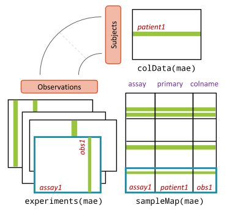
An MAE has three parts:
-
experiments(): a list of experiments. Each experiment is one data type stored as its own object, here a TreeSE. The rows are the features and the columns are the samples, as before. -
colData(): one shared table of sample information, with one row per subject, here one row per rat. -
sampleMap(): a table that links each column of each experiment to a subject incolData(). Thanks to it, the MAE knows which columns belong to the same rat, even if they are named differently or in a different order.
Compared with a TreeSE:
| TreeSE | MAE | |
|---|---|---|
| Data | Tables of the same features, assay()
|
Experiments with different features, experiments()
|
| Pick one table | assay(tse, "counts") |
mae[["microbiota"]] (a TreeSE) |
| Sample information |
colData(tse), one row per column |
colData(mae), one row per subject |
| Subset | tse[features, samples] |
mae[features, subjects, experiments] |
The printout above shows that our MAE has three experiments, all with
40 columns: microbiota with 12706 rows (taxa),
metabolites with 38 rows and biomarkers with
39 rows.
Look inside the MultiAssayExperiment
names() gives the names of the experiments, and
[[ picks one of them. The result is an ordinary TreeSE, and
all the usual TreeSE functions work on it:
R
names(mae)
OUTPUT
[1] "microbiota" "metabolites" "biomarkers" R
mae[["metabolites"]]
OUTPUT
class: TreeSummarizedExperiment
dim: 38 40
metadata(0):
assays(1): nmr
rownames(38): Butyrate Acetate ... Malonate 1,3-dihydroxyacetone
rowData names(0):
colnames(40): C1 C2 ... C39 C40
colData names(0):
reducedDimNames(0):
mainExpName: NULL
altExpNames(0):
rowLinks: NULL
rowTree: NULL
colLinks: NULL
colTree: NULLR
assayNames(mae[["metabolites"]])
OUTPUT
[1] "nmr"R
assay(mae[["metabolites"]], "nmr")[1:5, 1:5]
OUTPUT
C1 C2 C3 C4 C5
Butyrate 0.9441 0.9605 2.2940 0.8100 0.6623
Acetate 9.0399 8.8941 18.4768 14.9939 16.7815
Propionate 2.0856 2.2319 3.6512 3.4386 4.0731
Valerate 0.3554 0.3351 0.6565 0.4298 0.4812
Isovalerate 0.0998 0.1116 0.1312 0.1084 0.0858The shared sample information is in colData(), and
$ accesses one of its columns, as with a TreeSE:
R
colData(mae)
OUTPUT
DataFrame with 40 rows and 6 columns
Sample Rat Site Diet Fat XOS
<character> <factor> <character> <factor> <factor> <numeric>
C1 C1 1 Cecum High-fat High 0
C2 C2 2 Cecum High-fat High 0
C3 C3 3 Cecum High-fat High 0
C4 C4 4 Cecum High-fat High 0
C5 C5 5 Cecum High-fat High 0
... ... ... ... ... ... ...
C36 C36 36 Cecum Low-fat + XOS Low 1
C37 C37 37 Cecum Low-fat + XOS Low 1
C38 C38 38 Cecum Low-fat + XOS Low 1
C39 C39 39 Cecum Low-fat + XOS Low 1
C40 C40 40 Cecum Low-fat + XOS Low 1R
table(mae$Fat, mae$XOS)
OUTPUT
0 1
Low 10 10
High 10 10Each of the four diets has 10 rats. The column XOS is a
number (0 or 1). We turn it into a factor with clear labels, which will
make the plots easier to read:
R
mae$XOS <- factor(mae$XOS, levels = c(0, 1), labels = c("control", "XOS"))
table(mae$Diet, mae$XOS)
OUTPUT
control XOS
High-fat 10 0
High-fat + XOS 0 10
Low-fat 10 0
Low-fat + XOS 0 10Finally, sampleMap() shows how the columns of the
experiments are linked to the rats:
R
sampleMap(mae)
OUTPUT
DataFrame with 120 rows and 3 columns
assay primary colname
<factor> <character> <character>
1 microbiota C1 C1
2 microbiota C2 C2
3 microbiota C3 C3
4 microbiota C4 C4
5 microbiota C5 C5
... ... ... ...
116 biomarkers C36 C36
117 biomarkers C37 C37
118 biomarkers C38 C38
119 biomarkers C39 C39
120 biomarkers C40 C40There is one row for each column of each experiment: 3 experiments ×
40 samples = 120 rows. The column assay is the experiment,
primary is the subject (the rat, a row of
colData(mae)), and colname is the name of the
column in the experiment. For rat C1, there is one column
in each experiment:
R
sampleMap(mae)[sampleMap(mae)$primary == "C1", ]
OUTPUT
DataFrame with 3 rows and 3 columns
assay primary colname
<factor> <character> <character>
1 microbiota C1 C1
2 metabolites C1 C1
3 biomarkers C1 C1In our data, primary and colname are the
same, because each rat has one sample per data type with the same name.
They differ when the names differ, for example C1_16S and
C1_NMR, or when a rat has several samples in one
experiment, for example C1_week0 and C1_week8
before and after the diet. Both columns then have the primary
C1, and they share the sample information of rat
C1.
Experiments with the sample information
The experiments inside the MAE have no sample information of their
own: it is stored once, in colData(mae).
R
colData(mae[["microbiota"]])
OUTPUT
DataFrame with 40 rows and 0 columnsWhen we need the sample information in an experiment, for example to
colour a plot by diet, getWithColData() returns the
experiment with the matching rows of colData(mae)
added:
R
tse <- getWithColData(mae, "microbiota")
WARNING
Warning: 'experiments' dropped; see 'drops()'R
colData(tse)
OUTPUT
DataFrame with 40 rows and 6 columns
Sample Rat Site Diet Fat XOS
<character> <factor> <character> <factor> <factor> <factor>
C1 C1 1 Cecum High-fat High control
C2 C2 2 Cecum High-fat High control
C3 C3 3 Cecum High-fat High control
C4 C4 4 Cecum High-fat High control
C5 C5 5 Cecum High-fat High control
... ... ... ... ... ... ...
C36 C36 36 Cecum Low-fat + XOS Low XOS
C37 C37 37 Cecum Low-fat + XOS Low XOS
C38 C38 38 Cecum Low-fat + XOS Low XOS
C39 C39 39 Cecum Low-fat + XOS Low XOS
C40 C40 40 Cecum Low-fat + XOS Low XOSgetWithColData() warns that
'experiments' dropped: it takes one experiment out of the
MAE and leaves the others behind. The warning is harmless.
Challenge 1: Explore the biomarkers
- Which tables (assays) does the
biomarkersexperiment contain? - List the names of the first ten biomarkers.
- How many values are missing (
NA) in the biomarkers? Hint:is.na()andsum(). - Which biomarker has the most missing values?
R
assayNames(mae[["biomarkers"]])
OUTPUT
[1] "signals"R
head(rownames(mae[["biomarkers"]]), 10)
OUTPUT
[1] "Triglycerides_liver" "CLSs_epi" "Mononucl_epi"
[4] "miR21_liver" "miR122_liver" "miR192_liver"
[7] "miR221_liver" "CD45_Epi" "CD45_Mese"
[10] "IL1b_mese" R
sum(is.na(assay(mae[["biomarkers"]], "signals")))
OUTPUT
[1] 95R
na_per_biomarker <- rowSums(is.na(assay(mae[["biomarkers"]], "signals")))
head(sort(na_per_biomarker, decreasing = TRUE))
OUTPUT
HAD_epi AST_mese ALT_mese miR122_liver miR192_liver miR221_liver
15 11 10 5 5 5 - One assay,
signals. - The names describe the measurement and the tissue, for example
Triglycerides_liver(fat in the liver) orCD45_Epi(immune cells in the fat tissue around the testes, the epididymal fat). - 95 values are missing.
- HAD_epi, with 15 missing values out of 40.
Which samples have which data types?
In our study, every rat has all three data types. In real studies,
this is often not the case: a sample fails in sequencing, or there was
not enough material to measure the metabolites. The MAE handles this
without problems, because the sampleMap() records which
rats each experiment has.
To see how this looks, we make a copy of the data in which the biomarkers are missing for the last 10 rats:
R
mae_incomplete <- mae
mae_incomplete[["biomarkers"]] <- mae_incomplete[["biomarkers"]][, 1:30]
OUTPUT
harmonizing input:
removing 10 sampleMap rows with 'colname' not in colnames of experimentsR
mae_incomplete
OUTPUT
A MultiAssayExperiment object of 3 listed
experiments with user-defined names and respective classes.
Containing an ExperimentList class object of length 3:
[1] microbiota: TreeSummarizedExperiment with 12706 rows and 40 columns
[2] metabolites: TreeSummarizedExperiment with 38 rows and 40 columns
[3] biomarkers: TreeSummarizedExperiment with 39 rows and 30 columns
Functionality:
experiments() - obtain the ExperimentList instance
colData() - the primary/phenotype DataFrame
sampleMap() - the sample coordination DataFrame
`$`, `[`, `[[` - extract colData columns, subset, or experiment
*Format() - convert into a long or wide DataFrame
assays() - convert ExperimentList to a SimpleList of matrices
exportClass() - save data to flat filesAn UpSet plot shows how many samples have each
combination of data types. The function upsetSamples()
draws it:
R
upsetSamples(mae_incomplete)
OUTPUT
Install the required package(s) with:
BiocManager::install("UpSetR")ERROR
Error:
! The calling function requires missing package dependencies:
"UpSetR"Each column of the bottom panel is a combination of experiments (the connected dots), and the bar above it shows the number of samples with that combination.
Result: 30 rats have all three data types, and 10 rats have only the microbiota and the metabolites.
Many integration methods need the same samples in every experiment.
intersectColumns() keeps only the samples that are in all
experiments:
R
intersectColumns(mae_incomplete)
OUTPUT
A MultiAssayExperiment object of 3 listed
experiments with user-defined names and respective classes.
Containing an ExperimentList class object of length 3:
[1] microbiota: TreeSummarizedExperiment with 12706 rows and 30 columns
[2] metabolites: TreeSummarizedExperiment with 38 rows and 30 columns
[3] biomarkers: TreeSummarizedExperiment with 39 rows and 30 columns
Functionality:
experiments() - obtain the ExperimentList instance
colData() - the primary/phenotype DataFrame
sampleMap() - the sample coordination DataFrame
`$`, `[`, `[[` - extract colData columns, subset, or experiment
*Format() - convert into a long or wide DataFrame
assays() - convert ExperimentList to a SimpleList of matrices
exportClass() - save data to flat filesSubset the MultiAssayExperiment
An MAE is subset with [ , ] like a TreeSE. The columns
are the samples, and the subset is applied to all
experiments at once. Here we keep only the rats on the high-fat
diet:
R
mae_highfat <- mae[, mae$Fat == "High"]
mae_highfat
OUTPUT
A MultiAssayExperiment object of 3 listed
experiments with user-defined names and respective classes.
Containing an ExperimentList class object of length 3:
[1] microbiota: TreeSummarizedExperiment with 12706 rows and 20 columns
[2] metabolites: TreeSummarizedExperiment with 38 rows and 20 columns
[3] biomarkers: TreeSummarizedExperiment with 39 rows and 20 columns
Functionality:
experiments() - obtain the ExperimentList instance
colData() - the primary/phenotype DataFrame
sampleMap() - the sample coordination DataFrame
`$`, `[`, `[[` - extract colData columns, subset, or experiment
*Format() - convert into a long or wide DataFrame
assays() - convert ExperimentList to a SimpleList of matrices
exportClass() - save data to flat filesResult: each experiment now has 20 samples. The data types and the sample information stay in sync.
To keep only some experiments, we use the third index:
R
mae[, , c("microbiota", "metabolites")]
OUTPUT
A MultiAssayExperiment object of 2 listed
experiments with user-defined names and respective classes.
Containing an ExperimentList class object of length 2:
[1] microbiota: TreeSummarizedExperiment with 12706 rows and 40 columns
[2] metabolites: TreeSummarizedExperiment with 38 rows and 40 columns
Functionality:
experiments() - obtain the ExperimentList instance
colData() - the primary/phenotype DataFrame
sampleMap() - the sample coordination DataFrame
`$`, `[`, `[[` - extract colData columns, subset, or experiment
*Format() - convert into a long or wide DataFrame
assays() - convert ExperimentList to a SimpleList of matrices
exportClass() - save data to flat filesTo keep only some features, subsetByRow() takes a list
with the rows to keep in each experiment. Here we keep three short-chain
fatty acids and all biomarkers:
R
subsetByRow(mae, list(metabolites = c("Butyrate", "Acetate", "Propionate"),
biomarkers = rownames(mae[["biomarkers"]])))
OUTPUT
A MultiAssayExperiment object of 3 listed
experiments with user-defined names and respective classes.
Containing an ExperimentList class object of length 3:
[1] microbiota: TreeSummarizedExperiment with 12706 rows and 40 columns
[2] metabolites: TreeSummarizedExperiment with 3 rows and 40 columns
[3] biomarkers: TreeSummarizedExperiment with 39 rows and 40 columns
Functionality:
experiments() - obtain the ExperimentList instance
colData() - the primary/phenotype DataFrame
sampleMap() - the sample coordination DataFrame
`$`, `[`, `[[` - extract colData columns, subset, or experiment
*Format() - convert into a long or wide DataFrame
assays() - convert ExperimentList to a SimpleList of matrices
exportClass() - save data to flat filesExperiments that are not in the list lose all their rows.
Prepare the data
Each data type needs its own preparation before integration. The methods of the next episodes expect values that are roughly normally distributed. Rare features, which are zero in most samples, add noise rather than information. The data types are measured in different ways (episode 1), so each needs its own transformation:
| Experiment | Values | Preparation |
|---|---|---|
microbiota |
Read counts; compositional | Agglomerate, filter rare genera, rclr |
metabolites |
Concentrations; skewed, some below the detection limit | Replace NA with 0, log10 |
biomarkers |
Different units and scales, some NA
|
Keep as they are |
Microbiota
The microbiota experiment has 12706 taxa, many of them
rare. We prepare it as in a single-table analysis: we agglomerate the
taxa to genera, keep the prevalent genera and transform the counts.
First, we look at the taxonomy:
R
tse <- mae[["microbiota"]]
head(rowData(tse), 3)
OUTPUT
DataFrame with 3 rows and 7 columns
Phylum Class
<character> <character>
GAYR01026362.62.2014 D_1__Proteobacteria D_2__Alphaproteobact..
CVJT01000011.50.2173 D_1__Firmicutes D_2__Bacilli
KF625183.1.1786 D_1__Proteobacteria D_2__Gammaproteobact..
Order Family
<character> <character>
GAYR01026362.62.2014 D_3__Rickettsiales D_4__Mitochondria
CVJT01000011.50.2173 D_3__Bacillales D_4__Staphylococcaceae
KF625183.1.1786 D_3__Enterobacteriales D_4__Enterobacteriac..
Genus Species
<character> <character>
GAYR01026362.62.2014 D_5__Solanum melonge.. D_6__Solanum melonge..
CVJT01000011.50.2173 D_5__Staphylococcus D_6__Staphylococcus ..
KF625183.1.1786 D_5__Klebsiella D_6__Klebsiella oxyt..
OTU
<character>
GAYR01026362.62.2014 GAYR01026362.62.2014
CVJT01000011.50.2173 CVJT01000011.50.2173
KF625183.1.1786 KF625183.1.1786Each name has a prefix that tells its rank, such as
D_4__ for a family and D_5__ for a genus. The
prefixes come from the SILVA taxonomy database, and many datasets have
them. They do not change the analysis, so we keep them.
Now we agglomerate to genera, add relative abundances, keep the genera that are found in at least 20 % of the rats with a relative abundance above 0.1 %, and add an rclr table. The rclr transformation removes the effect of the sequencing depth and makes the values closer to normally distributed:
R
tse <- agglomerateByRank(tse, rank = "Genus")
tse <- transformAssay(tse, assay.type = "counts", method = "relabundance")
tse <- subsetByPrevalent(tse, assay.type = "relabundance",
detection = 0.001, prevalence = 0.2)
tse <- transformAssay(tse, assay.type = "counts", method = "rclr")
tse
OUTPUT
class: TreeSummarizedExperiment
dim: 57 40
metadata(1): agglomerated_by_rank
assays(3): counts relabundance rclr
rownames(57): Ambiguous_taxa_3 D_5__[Eubacterium] coprostanoligenes
group ... D_5__uncultured_3 D_5__uncultured_4
rowData names(7): Phylum Class ... Species OTU
colnames(40): C1 C2 ... C39 C40
colData names(0):
reducedDimNames(0):
mainExpName: NULL
altExpNames(0):
rowLinks: NULL
rowTree: NULL
colLinks: NULL
colTree: NULLSome genera are called uncultured: they are known only
from their DNA and have no proper name. Their names are not unique, so
mia adds a number, such as D_5__uncultured_2.
We put the prepared TreeSE back into the MAE:
R
mae[["microbiota"]] <- tse
Result: the microbiota now has 57 prevalent genera,
with the assays counts, relabundance and
rclr.
Metabolites
The metabolite concentrations have some missing values:
R
sum(is.na(assay(mae[["metabolites"]], "nmr")))
OUTPUT
[1] 27They are in only 8 of the 38 metabolites. We treat them as values below the detection limit of NMR: the metabolite was there in too small amounts to be measured. So we replace them with 0. If the values were missing because a measurement failed, this would be wrong.
The metabolites are absolute concentrations, not compositional
counts, so we do not use rclr. Concentrations are skewed (a few very
high values), so we add a log10 table. The logarithm of 0 is not
defined, so pseudocount = TRUE first adds half of the
smallest concentration above 0 to all values:
R
met <- mae[["metabolites"]]
assay(met, "nmr")[is.na(assay(met, "nmr"))] <- 0
met <- transformAssay(met, assay.type = "nmr", method = "log10",
pseudocount = TRUE)
OUTPUT
A pseudocount of 0.00045 was applied.R
mae[["metabolites"]] <- met
assayNames(mae[["metabolites"]])
OUTPUT
[1] "nmr" "log10"Biomarkers
The biomarkers are a mix of lab measurements, each with its own unit and scale, and some have missing values (challenge 1). One transformation does not fit all of them, so we keep them as they are. Where a method needs values on the same scale, such as MOFA in episode 4, we standardize each biomarker. MOFA also handles the missing values itself; for other methods, we drop the biomarkers with missing values.
Challenge 2: Do the diets differ?
Before integrating the data types, it is good to look at each of them alone.
- Draw box plots of the log10 concentrations of butyrate, acetate and
propionate by
Diet. Hint: usegetWithColData()to get the metabolites with the sample information. Then useplotBoxplot()withfeatures = ...,x = "Diet"andfacet.by = "rownames". - Make a PCA of the microbiota from its
rclrtable, and colour the rats byFatand shape them byXOS. Hint:runPCA()from scater andplotReducedDim(). - Which factor, the fat or the XOS, has a larger effect on the metabolites and on the microbiota?
R
met <- getWithColData(mae, "metabolites")
plotBoxplot(met, assay.type = "log10", x = "Diet",
features = c("Butyrate", "Acetate", "Propionate"),
facet.by = "rownames") +
theme(axis.text.x = element_text(angle = 45, hjust = 1))
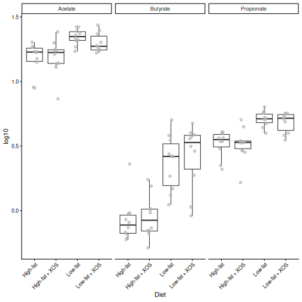
R
library(scater)
tse <- getWithColData(mae, "microbiota")
tse <- runPCA(tse, assay.type = "rclr", name = "PCA", ncomponents = 3)
plotReducedDim(tse, "PCA", colour_by = "Fat", shape_by = "XOS")
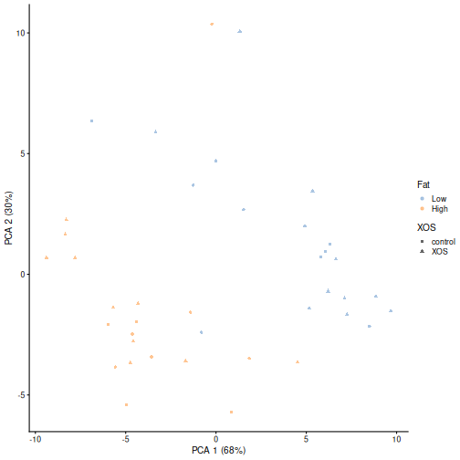
The fat content of the diet has by far the larger effect. The high-fat rats have less butyrate, acetate and propionate than the low-fat rats, and the high-fat and low-fat rats are separated along the first axis of the PCA. The effect of XOS is small in both data types. Keep this in mind: in the next episodes, the strongest shared patterns will be about fat.
Keep the object
We use the prepared mae object in all the next episodes,
so keep your R session open. If you restart R, run the code of this
episode again: the data comes with mia, so this takes only a few
seconds.
Your own data
To build an MAE from your own data, first create one TreeSE (or SummarizedExperiment) per data type, then combine them:
R
mae <- MultiAssayExperiment(
experiments = ExperimentList(microbiota = tse_taxa,
metabolites = tse_metabolites),
colData = sample_info
)
If the columns of the experiments are named differently from the rows
of sample_info, also give a sampleMap. See the
OMA chapter on data
containers and the MultiAssayExperiment
vignette.
- The HintikkaXO data has three data types from 40 rats: microbiota, metabolites and host biomarkers. The rats were fed a high-fat or a low-fat diet, with or without the prebiotic XOS.
- A
MultiAssayExperimentholds several experiments (here three TreeSEs), one shared table of sample information (colData()) and asampleMap()that links them. -
[[picks one experiment, and$accesses the sample information.getWithColData()returns an experiment together with the sample information. -
upsetSamples()shows which samples have which data types, andintersectColumns()keeps the samples that have all of them. - Subsetting by samples keeps all experiments in sync.
subsetByRow()subsets the features of each experiment. -
sampleMap()links each column (colname) of each experiment to a subject (primary) incolData(). - Each data type needs its own preparation: we agglomerate, filter and rclr-transform the compositional microbiota, replace values below the detection limit and log-transform the metabolites, and keep the biomarkers as they are.
Content from Exploratory methods
Last updated on 2026-10-13 | Edit this page
Overview
Questions
- Are the gut bacteria and the metabolites related?
- Which metabolites are related to the microbiota as a whole?
- Which genera go together with which metabolites?
Objectives
- Explain the idea of a Mantel test, and use it to test whether two data types are related overall.
- Find the features of one data type that relate to the whole other data type with MiRKAT.
- Calculate, plot and interpret pairwise associations between genera and metabolites.
- Explain why a shared factor, such as the diet, can create associations between data types, and check this by repeating an analysis within each diet group.
Where are we?
In the previous episode,
we stored and prepared the three data types in a
MultiAssayExperiment. Now we start to
integrate them. The exploratory methods of this episode
go from the big picture to the details:
| Step | Question | Method |
|---|---|---|
| 1 | Are the two data types related overall? | Mantel test |
| 2 | Which metabolites relate to the whole microbiota? | MiRKAT |
| 3 | Which genera go together with which metabolites? | Pairwise association |
We focus on two data types, the microbiota and the metabolites.
Load packages
The methods come from the multiomics package of the OMA framework. It is not yet in Bioconductor; the setup instructions install it from GitHub.
R
library(mia)
library(miaViz)
library(MultiAssayExperiment)
library(multiomics)
library(ggplot2)
We continue with the mae object that we prepared in episode 2:
R
mae
OUTPUT
A MultiAssayExperiment object of 3 listed
experiments with user-defined names and respective classes.
Containing an ExperimentList class object of length 3:
[1] microbiota: TreeSummarizedExperiment with 57 rows and 40 columns
[2] metabolites: TreeSummarizedExperiment with 38 rows and 40 columns
[3] biomarkers: TreeSummarizedExperiment with 39 rows and 40 columns
Functionality:
experiments() - obtain the ExperimentList instance
colData() - the primary/phenotype DataFrame
sampleMap() - the sample coordination DataFrame
`$`, `[`, `[[` - extract colData columns, subset, or experiment
*Format() - convert into a long or wide DataFrame
assays() - convert ExperimentList to a SimpleList of matrices
exportClass() - save data to flat filesAll methods below take the same arguments:
-
experiments: which two experiments to compare, herec(1, 2)formicrobiotaandmetabolites; -
assay.types: which table to use from each experiment, hererclrfor the microbiota andlog10for the metabolites.
The methods may warn that 'experiments' dropped. They
take the two experiments out of the MAE, and the warning is
harmless.
1. Are the data types related? The Mantel test
The Mantel test (Mantel 1967) compares two dissimilarity matrices. For each pair of rats, we calculate one dissimilarity based on the microbiota and one based on the metabolites. If rats that are similar in their microbiota are also similar in their metabolites, the two dissimilarities are correlated.
We use the Euclidean distance for both. On the rclr values of the microbiota, this is the robust Aitchison distance.
Is the correlation larger than we would expect by chance? Like PERMANOVA, the Mantel test answers this with permutations: it shuffles the rats of one table many times, recalculates the correlation each time, and checks how often the shuffled correlation is as large as the real one. This is why we set a seed.
R
set.seed(123)
mantel <- getMantel(mae, experiments = c(1, 2),
assay.types = c("rclr", "log10"),
dist.methods = c("euclidean", "euclidean"))
mantel
OUTPUT
Mantel statistic based on Kendall's rank correlation tau
Call:
mantel(xdis = x[[1L]], ydis = x[[2L]], method = method, permutations = npermutations, strata = strata, na.rm = na.rm, parallel = parallel)
Mantel statistic r: 0.1138
Significance: 0.011
Upper quantiles of permutations (null model):
90% 95% 97.5% 99%
0.0607 0.0780 0.0947 0.1111
Permutation: free
Number of permutations: 999The Mantel statistic r is the correlation between the
two dissimilarity matrices (by default, Kendall’s rank correlation), and
Significance is its permutation p-value. The correlations
of the shuffled data are stored in mantel$perm. A histogram
shows where the real correlation (red line) lies among them:
R
hist(mantel$perm, breaks = 30, main = "Mantel test",
xlab = "Correlation of shuffled data")
abline(v = mantel$statistic, col = "red", lwd = 2)
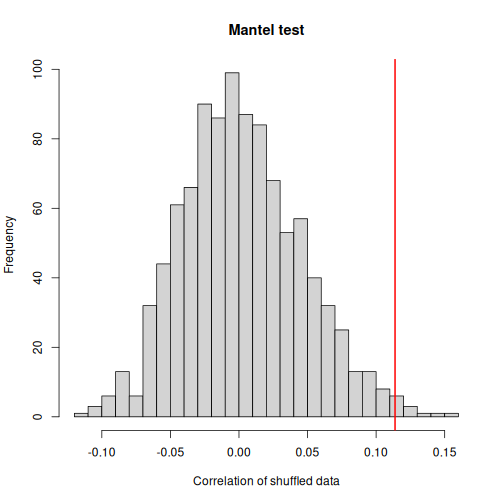
Result: the microbiota and the metabolites are related (r = 0.11, p = 0.011): rats with similar gut bacteria tend to have similar metabolites in the gut. Few shuffled correlations are as large as the real one. Still, the correlation is weak, so each data type also carries much information that the other does not.
Challenge 1: Is it only the diet?
Both the microbiota and the metabolites differ between the high-fat and the low-fat rats (episode 2). Could the Mantel result be caused only by the diet, and not by a direct link between bacteria and metabolites?
- Subset
maeto the rats on the high-fat diet. - Repeat the Mantel test on this subset.
- Is the association stronger or weaker than with all rats? What does this tell you?
R
mae_highfat <- mae[, mae$Fat == "High"]
set.seed(123)
mantel_highfat <- getMantel(mae_highfat, experiments = c(1, 2),
assay.types = c("rclr", "log10"),
dist.methods = c("euclidean", "euclidean"))
mantel_highfat$statistic
OUTPUT
[1] 0.09161793R
mantel_highfat$signif
OUTPUT
[1] 0.167Within the high-fat rats, r = 0.09 and p = 0.17. The association is weaker than with all rats.
When two data types both depend on a third factor, such as the diet, they are correlated even if they do not affect each other. Part of the association over all rats comes from the diet. Comparing rats within one diet group removes this part. With only 20 rats, the test also has less power.
2. Which metabolites relate to the microbiota? MiRKAT
The Mantel test gives one number for the whole tables. MiRKAT (the microbiome regression-based kernel association test; Zhao et al. 2015) goes one step further: it tests, for each metabolite, whether the metabolite is related to the microbiota as a whole.
The idea: MiRKAT turns the microbiota distances into a kernel, a matrix of similarities between the rats. It then asks whether rats with a similar microbiota also have similar values of the metabolite. This is like a regression of the metabolite on all genera at once, without estimating one coefficient per genus, which would be impossible with 57 genera and 40 rats.
R
mirkat <- getMiRKAT(mae, experiments = c(1, 2),
assay.types = c("rclr", "log10"),
dist.methods = "euclidean")
head(mirkat)
OUTPUT
p_values_euclidean krv_euclidean r2_euclidean
Butyrate 9.669747e-07 8.333548e-06 0.194115404
Acetate 1.649362e-02 2.716656e-06 0.020628585
Propionate 6.032696e-03 3.392296e-06 0.032165309
Valerate 8.499944e-02 1.607873e-06 0.007226096
Isovalerate 1.237908e-02 2.910570e-06 0.023678608
Isobutyrate 2.037613e-01 1.029617e-06 0.002963135There is one row per metabolite. p_values_euclidean is
the p-value, and r2_euclidean estimates the share of the
metabolite’s variation that is explained by the microbiota, like the R2
of a regression. (krv_euclidean is another measure of
association that we do not use.) We correct the p-values for multiple
testing:
R
mirkat$qval <- p.adjust(mirkat$p_values_euclidean, method = "fdr")
sum(mirkat$qval < 0.05)
OUTPUT
[1] 7We plot the 15 metabolites with the highest R2. The highest values are at the bottom:
R
mirkat_top <- mirkat[order(mirkat$r2_euclidean, decreasing = TRUE)[1:15], ]
plot(mirkat_top, column = "r2_euclidean")
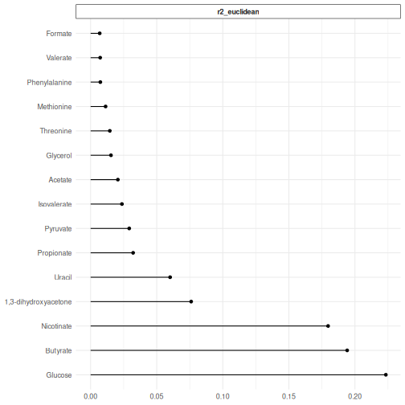
Result: 7 of the 38 metabolites are significantly related to the microbiota (q < 0.05): Glucose, Butyrate, Nicotinate, 1,3-dihydroxyacetone, Uracil, Propionate, Pyruvate. The microbiota explains up to 22 % of the variation of a single metabolite.
Butyrate, propionate and acetate are short-chain fatty acids that gut bacteria produce when they ferment fibre, so it makes sense that they are related to the microbiota.
3. Which genera go with which metabolites? Pairwise association
Now we look at pairs of features: for every genus and every metabolite, we calculate a correlation across the rats (by default Kendall’s tau).
With 57 genera and 38 metabolites, the heatmap would be hard to read.
We keep the 20 most abundant genera with subsetByRow(),
which we met in episode 2:
R
top_genera <- getTop(mae[["microbiota"]], top = 20, assay.type = "relabundance")
mae_top <- subsetByRow(mae, list(microbiota = top_genera,
metabolites = rownames(mae[["metabolites"]])))
assoc <- getPairwiseAssociation(mae_top, experiments = c(1, 2),
assay.types = c("rclr", "log10"))
head(assoc)
OUTPUT
feature1 feature2 value
1 D_5__Parabacteroides Butyrate 0.34358974
2 D_5__Alistipes Butyrate -0.18461538
3 D_5__uncultured bacterium_1 Butyrate 0.46923077
4 D_5__Ruminococcaceae UCG-014 Butyrate 0.07179487
5 D_5__Bacteroides Butyrate 0.06923077
6 D_5__Akkermansia Butyrate -0.40512821Each row is one pair of features (feature1 is the genus,
feature2 the metabolite) with its association
(value), from −1 to 1. The plot() function
draws a heatmap, with the genera and metabolites ordered so that similar
patterns are next to each other:
R
plot(assoc) +
theme(axis.text.x = element_text(angle = 45, hjust = 1))
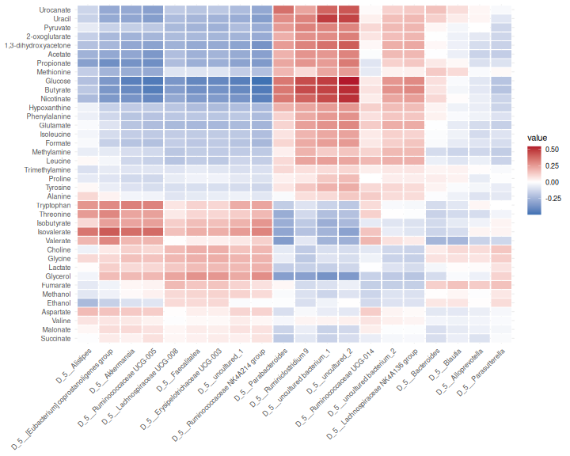
Result: the strongest association is between D_5__uncultured_2 and Glucose (0.54). Groups of genera show the same pattern across the metabolites, often because they respond to the diet in the same way.
Correlation is not causation
A strong association between a genus and a metabolite can mean that the genus produces or uses the metabolite. But it can also mean that both depend on something else, such as the diet (challenge 1). Genera that tend to occur together also share their associations. Treat associations as hypotheses to follow up.
Challenge 2: Read the heatmap
- Find butyrate in the heatmap. Which genera are positively associated with it, and which negatively?
- Make the heatmap again with Spearman’s correlation
(
method = "spearman"). Does the picture change?
R
assoc_spearman <- getPairwiseAssociation(mae_top, experiments = c(1, 2),
assay.types = c("rclr", "log10"),
method = "spearman")
plot(assoc_spearman) +
theme(axis.text.x = element_text(angle = 45, hjust = 1))
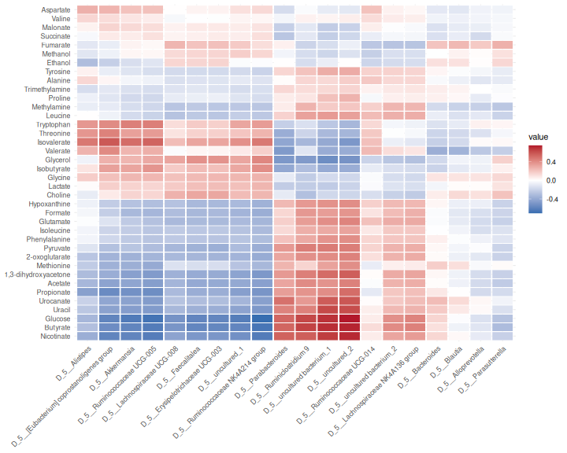
With Kendall’s tau, the genera most positively associated with butyrate are D_5__uncultured_2, D_5__uncultured bacterium_1, D_5__Ruminiclostridium 9, and the most negatively associated are D_5__Ruminococcaceae NK4A214 group, D_5__Ruminococcaceae UCG-005, D_5__uncultured_1.
Spearman’s correlations are larger in size than Kendall’s tau, because the two measure the association on different scales. The pattern (which pairs are positive and which negative) is very similar.
Challenge 3 (about 30 minutes): Who goes with butyrate?
Butyrate is a short-chain fatty acid that feeds the cells of the gut wall, and it was among the metabolites most strongly related to the microbiota (MiRKAT). Which genera go together with butyrate?
- Create an MAE that contains all genera and only butyrate. Hint:
subsetByRow(). - Calculate the association between butyrate and every genus with
getPairwiseAssociation()and Spearman’s correlation. - Which five genera have the strongest positive association with butyrate, and which five the strongest negative association?
- Draw a box plot of the rclr abundance of the most positively
associated genus by
Diet. Compare it with the box plot of butyrate from challenge 2 of episode 2. Hint:getWithColData()andplotBoxplot(). - Calculate the association between butyrate and the same genus again,
but within each fat group. Hint: the argument
group.by = "Fat". Is the association still there, or does it come mainly from the difference between the diet groups?
R
mae_butyrate <- subsetByRow(mae, list(microbiota = rownames(mae[["microbiota"]]),
metabolites = "Butyrate"))
assoc_butyrate <- getPairwiseAssociation(mae_butyrate, experiments = c(1, 2),
assay.types = c("rclr", "log10"),
method = "spearman")
assoc_butyrate <- assoc_butyrate[order(assoc_butyrate$value, decreasing = TRUE), ]
head(assoc_butyrate[, c("feature1", "value")], 5)
OUTPUT
feature1 value
55 D_5__uncultured_2 0.7262664
52 D_5__uncultured bacterium_1 0.7033771
10 D_5__Anaerostipes 0.6675422
32 D_5__Oscillibacter 0.6604128
33 D_5__Papillibacter 0.6495310R
tail(assoc_butyrate[, c("feature1", "value")], 5)
OUTPUT
feature1 value
42 D_5__Ruminococcaceae NK4A214 group -0.6606004
24 D_5__Lachnoclostridium -0.6637899
49 D_5__UBA1819 -0.6889306
29 D_5__Marvinbryantia -0.7215760
27 D_5__Lactobacillus -0.7309568R
genus <- as.character(assoc_butyrate$feature1[1])
tse <- getWithColData(mae, "microbiota")
plotBoxplot(tse, assay.type = "rclr", x = "Diet", features = genus) +
theme(axis.text.x = element_text(angle = 45, hjust = 1))
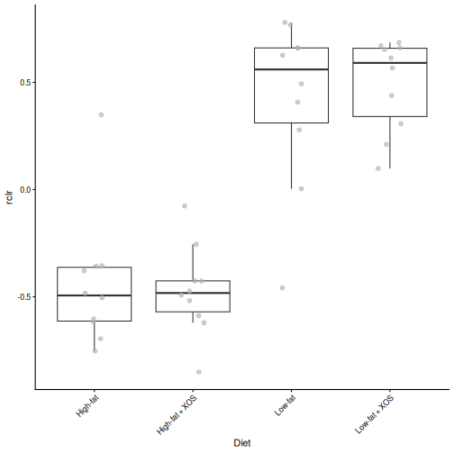
R
mae_genus <- subsetByRow(mae, list(microbiota = genus,
metabolites = "Butyrate"))
assoc_groups <- getPairwiseAssociation(mae_genus, experiments = c(1, 2),
assay.types = c("rclr", "log10"),
method = "spearman", group.by = "Fat")
assoc_groups
OUTPUT
feature1 feature2 value strata
1 D_5__uncultured_2 Butyrate 0.02406015 High
2 D_5__uncultured_2 Butyrate 0.41654135 LowD_5__uncultured_2 has the strongest positive association with butyrate (0.73). Like butyrate, it is higher in the low-fat rats than in the high-fat rats. Within the groups, the association is much weaker: 0.02 in the high-fat rats and 0.42 in the low-fat rats. Much of the association over all rats comes from the difference between the diet groups.
This is the lesson of challenge 1 again: an association over all
samples can be driven by a shared factor. To find links that hold
within a diet, we can analyse the groups separately
(group.by), or remove the effect of the diet before
calculating the associations (the argument formula, see
?getPairwiseAssociation).
Other exploratory methods
The multiomics package also has getJointRDA()
(redundancy analysis of one data type constrained by the other) and
getLASSO() (a sparse regression of each feature of one data
type on the other). The Bioconductor package anansi tests only
the pairs that make biological sense, for example a bacterium and the
metabolites that its enzymes can produce. See the OMA chapters on multi-omics
and cross-association.
References
- Mantel N. (1967) The detection of disease clustering and a generalized regression approach. Cancer Research 27: 209–220.
- Zhao N. et al. (2015) Testing in microbiome-profiling studies with MiRKAT, the microbiome regression-based kernel association test. American Journal of Human Genetics 96: 797–807.
- Exploratory integration goes from the big picture to the details: global association, feature vs data type, and feature vs feature.
-
getMantel()tests whether two data types are related overall;getMiRKAT()finds the features of one data type that relate to the other as a whole. -
getPairwiseAssociation()calculates the association of every pair of features;subsetByRow()keeps the result small enough to plot. - The Mantel test and MiRKAT are permutation or kernel tests: they compare similarities between samples instead of single features.
- A shared factor, such as the diet, creates associations between data
types. Check associations within each group (
group.by). Associations are hypotheses, not proof that a bacterium produces a metabolite.
Content from Unsupervised methods
Last updated on 2026-10-13 | Edit this page
Overview
Questions
- How can we draw one map of the samples from several data types?
- What are the main patterns that the data types share, and which features drive them?
- How much of each data type does a shared pattern explain?
Objectives
- Explain the idea of joint RPCA and of a factor model (MOFA) in your own words.
- Create and interpret a joint ordination of two data types with joint RPCA.
- Prepare a
MultiAssayExperimentfor MOFA, and train a MOFA model. - Interpret the variance explained by each MOFA factor in each data type.
- Relate MOFA factors to the study design, and find the features with the largest weights.
- Describe what joint RPCA and MOFA show about the data.
Where are we?
In the previous episode, we found that the microbiota and the metabolites are related, and which genera go together with which metabolites. Now we look for the main patterns that the data types share.
A PCA draws a map of the samples from one table. The unsupervised methods of this episode do the same from several tables. They do not know the diets of the rats: they look for patterns in the data alone. We then check whether the patterns match the diets.
| Method | Data types | What it gives |
|---|---|---|
| Joint RPCA | Two or more (here microbiota and metabolites) | One map of the samples, with the features that drive it |
| MOFA | Two or more (here all three) | Factors shared by some or all data types, and how much of each data type they explain |
Load packages
R
library(mia)
library(miaViz)
library(MultiAssayExperiment)
library(MOFA2)
We continue with the mae object that we prepared in episode 2.
Missing values instead of zeros
Both methods of this episode can fill in missing values themselves. We use this for the zeros of the microbiota. A zero in an abundance table often does not mean that the genus is absent; it may only be too rare to be detected. The rclr transformation cannot take the logarithm of zero.
By default, transformAssay() fills in the zeros of the
rclr table by matrix completion, using one table only. The filled-in
table is a smoothed version of the data, which would make it look too
simple to the methods of this episode. With impute = FALSE,
transformAssay() keeps the zeros as missing values
(NA), and the integration methods handle them using all
data types:
R
mae[["microbiota"]] <- transformAssay(mae[["microbiota"]],
assay.type = "counts", method = "rclr",
impute = FALSE, name = "rclr_noimpute")
mean(is.na(assay(mae[["microbiota"]], "rclr_noimpute")))
OUTPUT
[1] 0.0377193Result: 4 % of the values are zeros, now stored as missing values. There are few, because we kept only the prevalent genera in episode 2.
Joint RPCA
Joint RPCA (joint robust PCA; Cordazzo Vargas et al. 2026) draws one map from two or more tables. It extends robust PCA (RPCA), which was made for sparse microbiome data:
-
Robust: the method fits only the values that were
observed. The zeros (our
NAs) are not replaced by a small number; they are left out, and the method fills them in from the main patterns of the data (matrix completion). A few unusual values have less influence than in a PCA. - Joint: all tables share one set of sample coordinates, the map, but each table has its own feature loadings. The map therefore shows the variation that the tables have in common.
We give the experiments and the assay to use from each. By default,
the method keeps 20 % of the samples aside to check how well the map
works for new samples. With only 40 rats, we use all of them
(test.ratio = 0):
R
mae <- addJointRPCA(mae, experiments = c(1, 2),
assay.types = c("rclr_noimpute", "log10"),
test.ratio = 0)
The result is stored in the metadata() of the MAE under
the name JointRPCA. It is a table with the coordinates of
the rats on 3 components (ncomponents), like the result of
a PCA.
Plot the samples and the features
plotJointRPCA() from miaViz draws the map of the
samples. It also adds an arrow for the most important features of each
data type: the longer the arrow, the more the feature drives the map. A
feature points towards the samples in which it is high. We colour the
rats by diet:
R
plotJointRPCA(mae, "JointRPCA", colour.by = "Diet", ntop = 5)
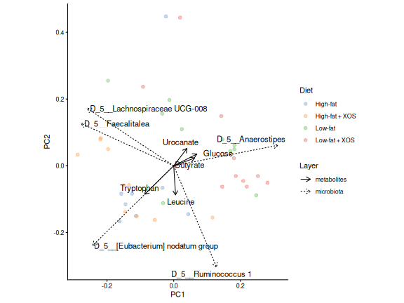
Result: without being told the diets, the joint map places most low-fat rats on the right and most high-fat rats on the left, with some overlap.
Which features drive the map?
Each feature has a loading on each axis, as in a
PCA. The loadings of all features, genera and metabolites together, are
stored with the result. plotLoadings() shows the features
with the largest loadings:
R
loadings <- attr(metadata(mae)[["JointRPCA"]], "rotation")
plotLoadings(loadings, ncomponents = 2, n = 10)
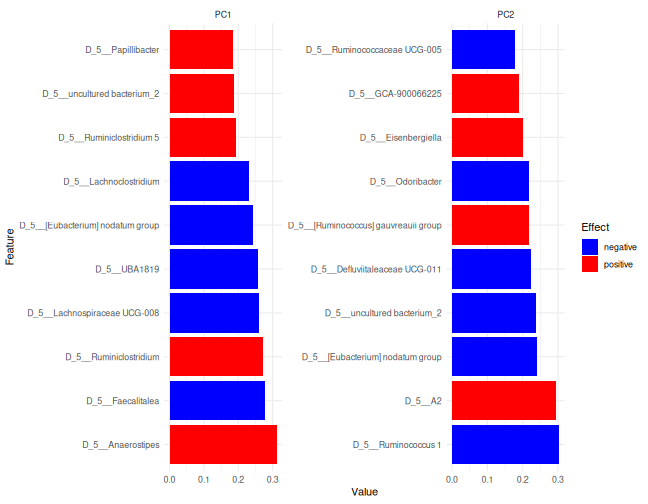
Features with a large positive loading are high in the rats on the positive side of the axis, and features with a large negative loading in the rats on the other side. Here, the top of the list is taken by genera; the biplot above shows the most important features of each data type.
Challenge 1: Read the joint RPCA
- Which metabolite has the largest loading on PC1 in the direction of
the low-fat rats? Hint: the rows of
loadingsinclude the metabolites. - Draw its box plot by
Diet, as in challenge 2 of episode 2. Does it agree with the map?
R
met <- getWithColData(mae, "metabolites")
plotBoxplot(met, assay.type = "log10", x = "Diet", features = top_met)
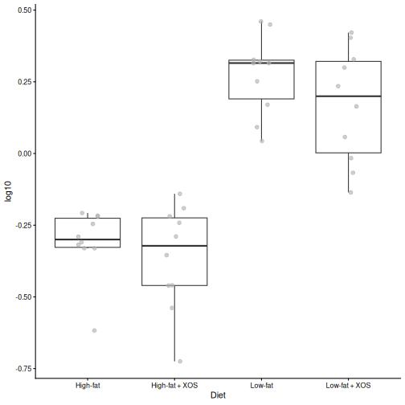
- Glucose has the largest loading in the direction of the low-fat rats.
- The box plot shows that it is indeed higher in the low-fat rats.
MOFA
MOFA (multi-omics factor analysis; Argelaguet et al. 2018, 2020) is like a PCA for several data types. It finds a small number of factors: hidden patterns that vary between the samples.
The idea of a factor model is that a few hidden variables explain much of what we measure. Think of a factor as a score for each rat, for example “how fatty was the diet”. Each feature follows this score with its own weight: a large positive weight means that the feature rises with the score, a weight near 0 means that the feature does not care. Everything that the factors do not explain is noise. MOFA prefers sparse weights, so that each factor is driven by a limited number of features.
Each factor can be shared by all data types, or be specific to one of them. For each factor, MOFA tells
- how much of the variation of each data type it explains;
- the value of each sample on the factor (like a PCA score);
- the weight of each feature (like a PCA loading).
MOFA uses all three data types, and it handles missing values: the zeros of the microbiota and the missing biomarkers.
Prepare the data
MOFA assumes roughly normally distributed values. We use the rclr values for the microbiota, the log10 values for the metabolites and the raw signals for the biomarkers.
The features are also measured on very different scales. A biomarker measured in large units would have a much larger variance than a genus, and MOFA would spend its factors on explaining it. We therefore standardize each feature (row) to mean 0 and standard deviation 1, so that every feature counts the same. We work on a copy of the MAE, so that the original stays as it is:
R
mae_mofa <- mae
mae_mofa[["microbiota"]] <- transformAssay(mae_mofa[["microbiota"]],
assay.type = "rclr_noimpute", method = "standardize", MARGIN = "rows",
name = "scaled")
mae_mofa[["metabolites"]] <- transformAssay(mae_mofa[["metabolites"]],
assay.type = "log10", method = "standardize", MARGIN = "rows",
name = "scaled")
mae_mofa[["biomarkers"]] <- transformAssay(mae_mofa[["biomarkers"]],
assay.type = "signals", method = "standardize", MARGIN = "rows",
name = "scaled")
MOFA uses the first assay of each experiment. We therefore keep only
the scaled assay in each of them:
R
assays(mae_mofa[["microbiota"]]) <- assays(mae_mofa[["microbiota"]])["scaled"]
assays(mae_mofa[["metabolites"]]) <- assays(mae_mofa[["metabolites"]])["scaled"]
assays(mae_mofa[["biomarkers"]]) <- assays(mae_mofa[["biomarkers"]])["scaled"]
Train the model
We create a MOFA object from the MAE.
extract_metadata = TRUE copies the sample information, so
that we can colour the plots by diet:
R
model <- create_mofa_from_MultiAssayExperiment(mae_mofa,
extract_metadata = TRUE)
model
OUTPUT
Untrained MOFA model with the following characteristics:
Number of views: 3
Views names: microbiota metabolites biomarkers
Number of features (per view): 57 38 39
Number of groups: 1
Groups names: group1
Number of samples (per group): 40
Next we set the options. With only 40 rats, we ask for 5 factors (see the callout below):
R
model_opts <- get_default_model_options(model)
model_opts$num_factors <- 5
model <- prepare_mofa(model, model_options = model_opts)
OUTPUT
Checking data options...OUTPUT
No data options specified, using default...OUTPUT
No training options specified, using default...OUTPUT
Checking model options...Finally, we train the model. MOFA trains in Python and saves the
model to a file; we use a temporary file. The first time, it installs
its own Python environment, which is why we did it in the setup. Training prints many lines; the model is
ready when it prints Training finished.
R
model <- run_mofa(model, outfile = tempfile(fileext = ".hdf5"),
use_basilisk = TRUE)
WARNING
Warning in .quality_control(object, verbose = verbose): Factor(s) 3 (metabolites) are strongly correlated with the per-sample averages of the indicated omics (See 'plot_factor_mean_cor()' for more detail).
Such factors appear when there are differences in the total 'levels' between your samples, *sometimes* because of poor normalisation in the preprocessing steps.MOFA checks the trained model and warns that one factor is strongly correlated with the per-sample averages of the metabolites. Such a factor describes rats that have higher concentrations of all metabolites, for example because the samples contained more material. This may be a technical difference rather than biology. We keep it in mind when we interpret the factors.
How many factors?
There is no single right number. A common approach is to ask for a few factors, train the model, and look at how much each factor explains (next section). Each factor is estimated from the samples, so with few samples, ask for few factors.
How much does each factor explain?
The most important MOFA plot shows how much of the variation of each data type each factor explains:
R
plot_variance_explained(model, x = "view", y = "factor")
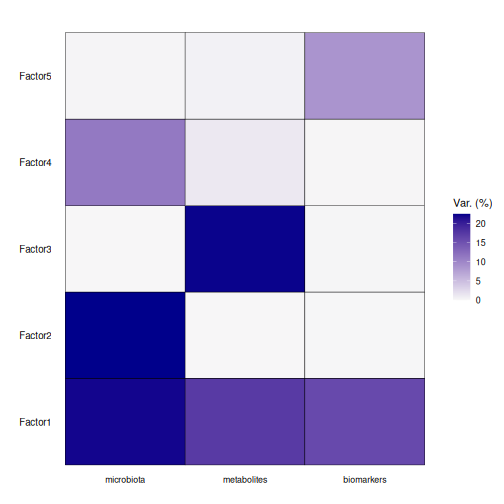
Read the heatmap row by row: a factor with dark cells in several columns is shared by those data types.
Result: factor 1 is shared by all three data types: it explains 22 % of the variation of the microbiota, 17 % of the metabolites and 16 % of the biomarkers. The other factors are mostly specific to one data type. In total, the five factors explain 54 %, 41 % and 25 % of the three data types.
What do the factors mean?
To find out what factor 1 is about, we plot the value of each rat on the factors, by diet:
R
plot_factor(model, factors = 1:3, color_by = "Fat", dodge = TRUE,
add_violin = TRUE)
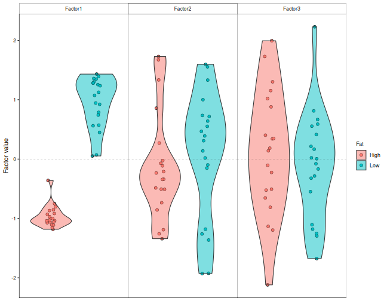
MOFA can also test the link between each factor and the sample
information. correlate_factors_with_covariates() correlates
every factor with the columns that we give, and plots the adjusted
p-values on a −log10 scale: the redder the cell, the stronger the
evidence:
R
correlate_factors_with_covariates(model, covariates = c("Fat", "XOS"),
plot = "log_pval")
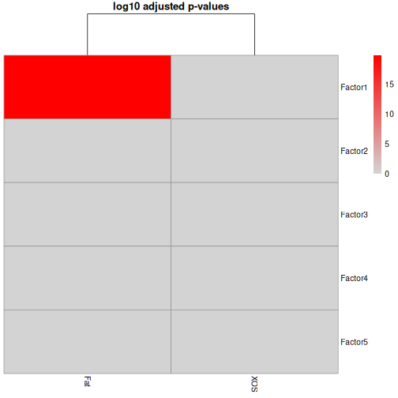
correlate_factors_with_covariates() warns that it
converts Fat and XOS to numbers (1 and 2).
With two groups, this is what we want.
Result: factor 1 separates the high-fat and the low-fat rats (adjusted p = 1.5e-20). The main pattern that the microbiota, the metabolites and the biomarkers share is the fat content of the diet.
Which features drive a factor?
The weights tell which features drive a factor. Features with a large positive weight are high in the rats with a high factor value, and features with a large negative weight are low in them. We plot the largest weights of factor 1 in each data type. The weights are scaled so that the largest one is 1:
R
plot_top_weights(model, view = "metabolites", factors = 1, nfeatures = 10)
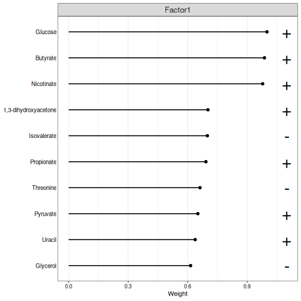
R
plot_top_weights(model, view = "biomarkers", factors = 1, nfeatures = 10)
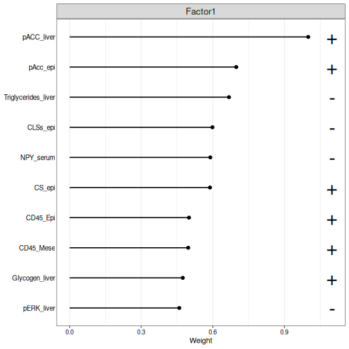
The plot shows the absolute weights; a + or
− sign next to each feature tells the direction. The
high-fat rats have negative values on factor 1, so the features with a −
sign are higher in the high-fat rats.
Challenge 2: The genera of factor 1
- Plot the ten genera with the largest weights on factor 1.
- Which genera are higher in the high-fat rats, and which in the low-fat rats?
- Does factor 1 agree with the joint RPCA? Compare the genera with the loadings plot of the joint RPCA.
R
plot_top_weights(model, view = "microbiota", factors = 1, nfeatures = 10)
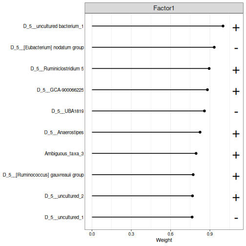
The high-fat rats have negative values on factor 1, so the genera with a − sign are higher in the high-fat rats, and the others in the low-fat rats. Several of the same genera, such as Anaerostipes, also drive the first joint RPCA axis: the two methods find the same main pattern, the fat in the diet.
Challenge 3: Is there an XOS factor?
The study was designed to test the effect of XOS.
- Plot the values of the rats on all five factors, coloured by
XOS. Does any factor separate the rats with and without XOS? - Look again at the output of
correlate_factors_with_covariates(). Is any factor significantly correlated withXOS? - Why might an unsupervised method miss the effect of XOS?
R
plot_factor(model, factors = 1:5, color_by = "XOS", dodge = TRUE,
add_violin = TRUE)
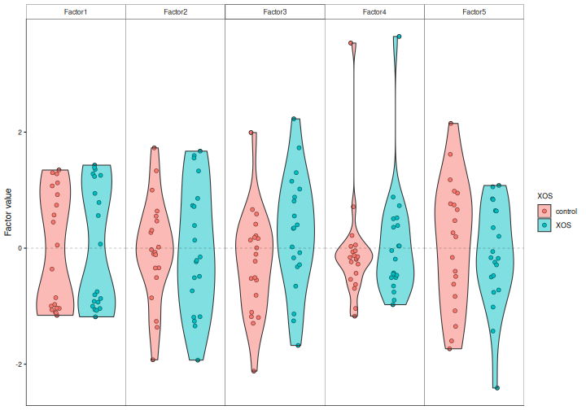
No factor separates the XOS groups, and no factor is significantly correlated with XOS.
An unsupervised method looks for the largest patterns in the data. Here, the fat in the diet dominates, and the smaller effect of XOS is hidden by it and by the differences between individual rats. To look for the features that tell the XOS groups apart, we need a supervised method, the topic of the next episode.
Two views of the same data
Joint RPCA and MOFA both look for patterns that several data types share, and in our data both find the same main pattern: the fat in the diet. They show the results in different ways:
- Joint RPCA gives one map of the samples, shared by all data types, with the loadings of all features.
- MOFA gives factors, and tells how much of each data type each factor explains, so that a factor can be shared by all data types or be specific to one.
Both are active areas of development. Try more than one method, and trust the patterns that they agree on.
References
- Cordazzo Vargas B. et al. (2026) Joint-RPCA: domain-aware multi-omics integration for systems microbiology. Molecular Systems Biology. doi:10.1038/s44320-026-00236-3
- Argelaguet R. et al. (2018) Multi-Omics Factor Analysis — a framework for unsupervised integration of multi-omics data sets. Molecular Systems Biology 14: e8124.
- Argelaguet R. et al. (2020) MOFA+: a statistical framework for comprehensive integration of multi-modal single-cell data. Genome Biology 21: 111.
- Unsupervised integration methods find the main patterns that several data types share, without knowing the study groups.
- Use rclr with
impute = FALSE, so that the integration methods handle the zeros themselves. - Joint RPCA (
addJointRPCA()) draws one map of the samples from two or more data types;plotJointRPCA()shows the samples and the features that drive the map. - MOFA is a factor model: a few hidden factors, shared by all data types or specific to one, explain the data. Standardize the features, and ask for few factors when there are few samples.
-
plot_variance_explained()shows how much of each data type each factor explains, andplot_top_weights()the features that drive it. - Joint RPCA and MOFA show the shared patterns in different ways; in our data they agree.
- In our study, the main shared pattern is the fat in the diet. Smaller effects, such as XOS, can be hidden by larger ones.
Content from Supervised methods
Last updated on 2026-10-13 | Edit this page
Overview
Questions
- Can we predict an outcome from several data types together?
- Which data types and which features predict the outcome?
- What are early, intermediate and late fusion?
Objectives
- Explain early, intermediate and late fusion (stacking) of several data types.
- Train a multi-omics prediction model with IntegratedLearner and evaluate it with cross-validation.
- Interpret the weights that IntegratedLearner gives to each data type.
- Explain the idea of sparse partial least squares, and find the features of several data types that together tell the groups apart with DIABLO.
- Describe what IntegratedLearner and DIABLO show about the data.
Where are we?
In the previous episode, the unsupervised methods found the main pattern that the data types share: the fat in the diet. They did not find the effect of XOS, because it is smaller.
Supervised methods are given an outcome, such as the diet group, and look for the features that predict it. Machine learning on a single microbiome table can predict, for example, a disease. Now we predict from several data types.
| Method | What it gives |
|---|---|
| IntegratedLearner | A prediction from all data types, how well it works, and how much each data type contributes |
| DIABLO | The features of each data type that together tell the groups apart |
Load packages
R
library(mia)
library(MultiAssayExperiment)
library(IntegratedLearner)
library(mixOmics)
We continue with the mae object that we prepared in episode 2.
Three ways to combine data types
How do we feed several tables to one prediction model? There are three common strategies, called fusion:
![Diagram of three data fusion strategies. Early fusion: the tables of all views are joined side by side into one table, and one model is trained on it. Intermediate fusion: a model is trained on each view, their outputs are joined, and one more model is trained on them. Late fusion: a model is trained on each view, and their predictions are combined into one final prediction. On the right, the outputs for continuous, binary, multiclass and survival outcomes; at the bottom, uncertainty estimation, feature importance, cross-validation and dimensionality reduction.](fig/integratedlearner-fusion.png)
Figure: IntegratedLearner (MIT licence).
- Early fusion: join all tables side by side into one big table, and train one model on it. This is simple, but the largest table (here the microbiota) can dominate the model.
- Intermediate fusion: train a model on each table, join what the models learned, and train one more model on top.
- Late fusion: train a separate model on each table, and combine their predictions, for example as a weighted average. The weights tell how much each data type contributes. Combining predictions with a second model is called stacking.
IntegratedLearner
IntegratedLearner (Mallick et al. 2024) fits both early fusion (the concatenated model) and late fusion (the stacked model), and compares them with the models of the single data types. It can use many machine learning methods as base learners, the models of the single data types; we use random forest.
How does stacking work? Each base learner predicts every rat with cross-validation, so each rat gets one predicted probability per data type from models that did not see it. A meta-learner then learns how to combine these probabilities. By default, it finds non-negative weights that sum to 1 and give the best AUC. A data type that predicts well gets a large weight, and a data type that adds nothing gets a weight near 0.
Prepare the data
IntegratedLearner reads the outcome and the sample IDs from the
sample information of each experiment, not from the shared
colData() of the MAE. getWithColData() adds
the sample information to an experiment, as in episode 2. We do this for
each of the three experiments:
R
mae[["microbiota"]] <- getWithColData(mae, "microbiota")
mae[["metabolites"]] <- getWithColData(mae, "metabolites")
mae[["biomarkers"]] <- getWithColData(mae, "biomarkers")
colnames(colData(mae[["metabolites"]]))
OUTPUT
[1] "Sample" "Rat" "Site" "Diet" "Fat" "XOS" Train the model
We predict whether a rat was fed the high-fat diet
(Fat). The arguments are:
-
experimentandassay.type: the data types and the table to use from each. Random forest works directly on the counts of the microbiota. -
outcome_colandsubject_id_col: the columns of the sample information with the outcome and the rat. -
na.rm = TRUE: drop the features with missing values (some biomarkers). -
folds = 5: evaluate the models with 5-fold cross-validation. -
base_learner: the machine learning method, here random forest. -
family = binomial(): the outcome has two classes. -
seed: fixes the random split into folds. The random forests are random too, so we also runset.seed()first.
R
set.seed(123)
fit <- IntegratedLearner(
MAE_train = mae,
experiment = c("microbiota", "metabolites", "biomarkers"),
assay.type = c("counts", "log10", "signals"),
outcome_col = "Fat",
subject_id_col = "Sample",
na.rm = TRUE,
folds = 5,
base_learner = "SL.randomForest",
family = binomial(),
seed = 123
)
OUTPUT
Time for model fit : 0.027 minutes
========================================
Model fit for individual layers: SL.randomForest
Model fit for stacked layer: sl_nnls_auc
Model fit for concatenated layer: SL.randomForest
========================================
AUC metric for training data:
Individual layers:
biomarkers metabolites microbiota
1.000 1.000 0.968
======================
Stacked model:1
======================
Concatenated model:1
======================
========================================
Weights for individual layers predictions in IntegratedLearner:
biomarkers metabolites microbiota
0.579 0.016 0.405
========================================The summary shows the AUC of each model. The printout calls it “training data”, but the AUCs are calculated from the cross-validated predictions: each rat is predicted by a model that did not see it during training, as with a separate test set.
How good are the predictions?
fit$metrics.train collects the AUC, accuracy and
balanced accuracy of each model:
R
fit$metrics.train
OUTPUT
model auc accuracy balanced_accuracy
1 biomarkers 1.000 1.0 1.0
2 metabolites 1.000 1.0 1.0
3 microbiota 0.968 0.9 0.9
4 stacked 1.000 1.0 1.0
5 concatenated 1.000 1.0 1.0plot() draws the ROC curve of each model. It returns the
plot and a table of the curves; we show only the plot:
R
plot(fit)$plot
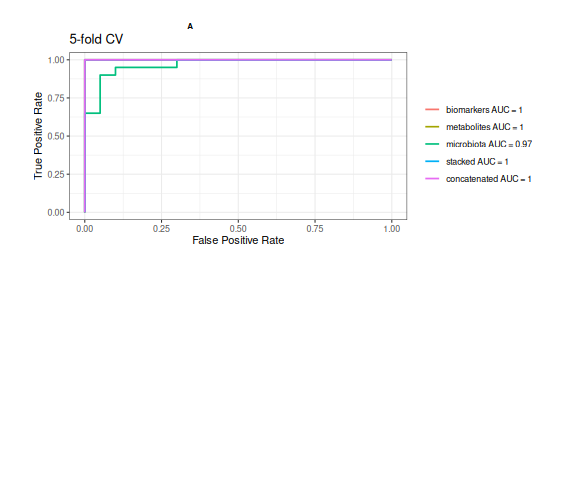
Result: every model predicts the fat in the diet very well (cross-validated AUC from 0.968 to 1). The fat has such a large effect that any one data type is enough to predict it.
How much does each data type contribute?
The late fusion (stacked) model combines the predictions of the three data types with weights:
R
fit$weights
OUTPUT
biomarkers metabolites microbiota
0.57877869 0.01623401 0.40498730 Result: the stacked model relies most on the biomarkers (weight 0.58). But when all data types predict equally well, as here, any of them will do, and the weights change a lot with the random seed. Interpret the weights only when the data types differ in how well they predict.
Challenge 1 (about 20 minutes): Can we predict XOS?
The unsupervised methods could not find the effect of XOS. Can a supervised method predict it?
- Train an IntegratedLearner model that predicts
XOSinstead ofFat, with the same settings otherwise. - Look at the AUC of each model. Which data type predicts XOS best? How well does it work compared with predicting the fat?
- Look at the weights of the stacked model. Which data types does it use?
- Does combining the data types improve the prediction over the best single data type?
R
set.seed(123)
fit_xos <- IntegratedLearner(
MAE_train = mae,
experiment = c("microbiota", "metabolites", "biomarkers"),
assay.type = c("counts", "log10", "signals"),
outcome_col = "XOS",
subject_id_col = "Sample",
na.rm = TRUE,
folds = 5,
base_learner = "SL.randomForest",
family = binomial(),
seed = 123
)
OUTPUT
Time for model fit : 0.023 minutes
========================================
Model fit for individual layers: SL.randomForest
Model fit for stacked layer: sl_nnls_auc
Model fit for concatenated layer: SL.randomForest
========================================
AUC metric for training data:
Individual layers:
biomarkers metabolites microbiota
0.575 0.609 0.425
======================
Stacked model:0.565
======================
Concatenated model:0.531
======================
========================================
Weights for individual layers predictions in IntegratedLearner:
biomarkers metabolites microbiota
0.526 0.405 0.069
========================================R
fit_xos$metrics.train
OUTPUT
model auc accuracy balanced_accuracy
1 biomarkers 0.575 0.575 0.575
2 metabolites 0.609 0.550 0.550
3 microbiota 0.425 0.425 0.425
4 stacked 0.565 0.575 0.575
5 concatenated 0.531 0.500 0.500R
fit_xos$weights
OUTPUT
biomarkers metabolites microbiota
0.52577398 0.40494153 0.06928449 XOS is much harder to predict than the fat. The best single data type is the metabolites (AUC 0.609). The stacked model has an AUC of 0.565 and the concatenated model 0.531.
Neither combined model is better than the best single data type. Combining the data types does not create a signal that is not in the data. With only 40 rats and a small effect, the predictions are uncertain: with another random seed, the numbers change. An AUC around 0.6 is only a little better than guessing (0.5).
More in IntegratedLearner
-
base_learner = "sl_bart"(the default) uses Bayesian additive regression trees, which also give the uncertainty of the predictions and of the feature importance. It needs Java and takes longer to run. -
run_intermediate = TRUEfits an intermediate fusion model (cooperative learning). -
MAE_validtakes an independent validation dataset.
See the IntegratedLearner documentation and the OMA chapter on machine learning.
DIABLO
IntegratedLearner tells us how well the data types predict the outcome. DIABLO (Singh et al. 2019), from the mixOmics package, focuses on which features do it. It looks for a few components (like PCA axes) that
- separate the groups, and
- are correlated between the data types,
and it selects a small number of features from each data type for each component.
DIABLO is based on sparse partial least squares (sPLS). A PCA finds the direction in one table along which the samples vary most. PLS instead finds one direction in each table, chosen so that the sample scores along the directions are as correlated as possible, between the tables and with the outcome. Sparse means that only a few features get a non-zero weight; the others are set to 0. The selected features form a short signature.
Prepare the data
mixOmics does not read a MAE. It takes a list of matrices with the
samples as rows, so we transpose the tables with
t(). We use the rclr values of the microbiota and the log10
values of the metabolites:
R
X <- list(
microbiota = t(assay(mae[["microbiota"]], "rclr")),
metabolites = t(assay(mae[["metabolites"]], "log10"))
)
Y <- mae$Fat
identical(rownames(X$microbiota), rownames(X$metabolites))
OUTPUT
[1] TRUER
identical(rownames(X$microbiota), rownames(colData(mae)))
OUTPUT
[1] TRUEThe rows of both matrices and the outcome must be in the same order;
the two checks confirm it. We leave out the biomarkers, which have
missing values. DIABLO standardizes each feature itself
(scale = TRUE).
Train the model
DIABLO needs the number of components (ncomp) and the
number of features to select from each data type for each component
(keepX). Here we select 10 genera and 5 metabolites for
each of 2 components:
R
diablo <- block.splsda(
X, Y, ncomp = 2,
keepX = list(microbiota = c(10, 10), metabolites = c(5, 5))
)
The design argument sets how strongly the components of
the data types should be correlated with each other, from 0 to 1. By
default, it is 1: DIABLO looks for components that are as correlated as
possible between the data types. A smaller value, such as 0.1, puts more
weight on separating the groups.
Plot the samples
plotIndiv() draws the samples on the first two
components, once for each data type:
R
plotIndiv(diablo, legend = TRUE, title = "DIABLO")
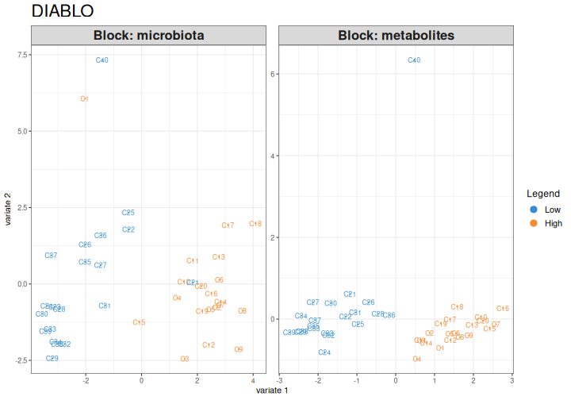
Result: in both data types, the first component clearly separates the high-fat and the low-fat rats.
How good is it?
The separation in the plot is on the same data that the model was
trained on. As always in machine learning, we estimate the error with
cross-validation. perf() repeats a 5-fold cross-validation
10 times. The folds are random, so we fix them with the
seed argument:
R
perf_diablo <- perf(diablo, validation = "Mfold", folds = 5, nrepeat = 10,
seed = 123)
perf_diablo$WeightedVote.error.rate$centroids.dist
OUTPUT
comp1 comp2
Low 0.0700 0.065
High 0.0050 0.005
Overall.ER 0.0375 0.035
Overall.BER 0.0375 0.035The table shows the error rate for each group and overall
(Overall.ER), with one and with two components.
Result: with one component, 4 % of the rats are classified wrongly, and with two components 4 %.
Which features tell the groups apart?
plotLoadings() shows the features selected for a
component and their weights. contrib = "max" colours each
feature by the group in which it is highest:
R
plotLoadings(diablo, comp = 1, contrib = "max", method = "median")
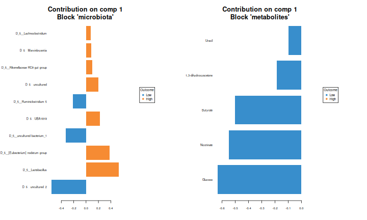
circosPlot() draws the correlations between the selected
features of the two data types. Lines connect features with a
correlation above cutoff:
R
circosPlot(diablo, cutoff = 0.7, line = TRUE, size.labels = 1.2,
size.variables = 0.7)
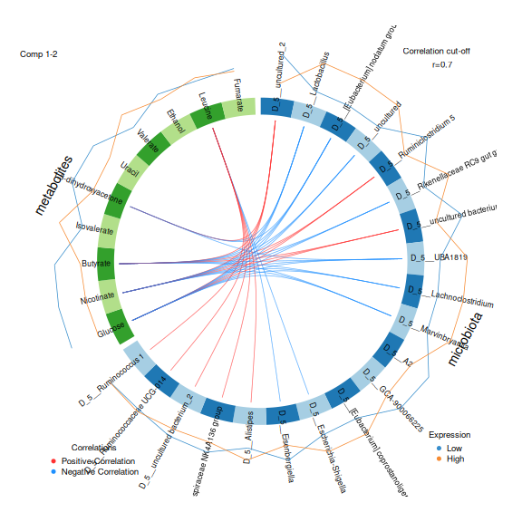
The selected features of component 1 are also listed by
selectVar():
R
selectVar(diablo, comp = 1)$metabolites$name
OUTPUT
[1] "Glucose" "Nicotinate" "Butyrate"
[4] "1,3-dihydroxyacetone" "Uracil" Result: the metabolites that tell the diets apart on component 1 are Glucose, Nicotinate, Butyrate, 1,3-dihydroxyacetone, Uracil. The circos plot shows that several of them are strongly correlated with the selected genera, both positively and negatively.
Challenge 2: Compare the methods
- Compare the metabolites selected by DIABLO with the metabolites that MiRKAT found in episode 3, and those with the largest weights on MOFA factor 1 in episode 4. Which metabolites appear in all of them?
- What does each method tell you that the others do not?
All five metabolites that DIABLO selected are also significant in MiRKAT and among the ten largest weights of MOFA factor 1. Glucose, butyrate and nicotinate are at the top of all three lists. Metabolites that are found by methods that work in different ways are good candidates for follow-up.
MiRKAT tells which metabolites are related to the microbiota as a whole. MOFA tells which features drive the main shared pattern, without knowing the groups. DIABLO selects the features that together tell the groups apart and are correlated between the data types. IntegratedLearner tells how well the data types predict the outcome, and how much each of them contributes.
Challenge 3 (about 15 minutes): DIABLO for XOS
- Train a DIABLO model that predicts
XOS, with the same settings. - Draw the samples with
plotIndiv(). Are the groups separated? - Estimate the error with
perf(). Compare it with the model for the fat. - Draw the samples again, but colour them by fat
(
group = mae$Fat). What does the first component separate?
R
diablo_xos <- block.splsda(
X, mae$XOS, ncomp = 2,
keepX = list(microbiota = c(10, 10), metabolites = c(5, 5))
)
plotIndiv(diablo_xos, legend = TRUE, title = "DIABLO: XOS")
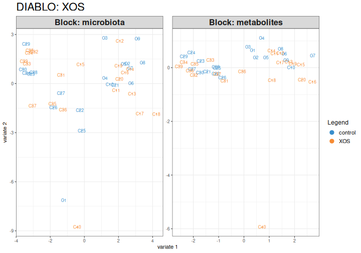
R
perf_xos <- perf(diablo_xos, validation = "Mfold", folds = 5, nrepeat = 10,
seed = 123)
perf_xos$WeightedVote.error.rate$centroids.dist
OUTPUT
comp1 comp2
control 0.58 0.5000
XOS 0.56 0.5250
Overall.ER 0.57 0.5125
Overall.BER 0.57 0.5125The groups overlap more than for the fat, even on the training data. The cross-validated error is about 51 %, compared with 4 % for the fat. With two equally large groups, guessing gives an error of 50 %. DIABLO always finds some separation on the training data, because it is built to do so. This is why the cross-validated error is the number to report.
R
plotIndiv(diablo_xos, group = mae$Fat, legend = TRUE,
title = "DIABLO: XOS, coloured by fat")
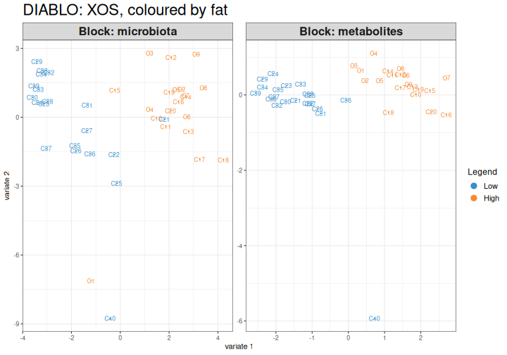
The first component of the XOS model largely separates the high-fat
and the low-fat rats. DIABLO also looks for components that are
correlated between the data types, and the strongest shared pattern is
the fat. The design argument (for example design = 0.1)
gives more weight to the outcome.
Two views of the same question
IntegratedLearner and DIABLO are both supervised, but they show different things:
- IntegratedLearner tells how well the data types predict the outcome, alone and combined, and how much each data type contributes. It can use many machine learning methods, and outcomes of many kinds.
- DIABLO selects a few features from each data type that together tell the groups apart and are correlated with each other.
In our data, both find that the fat is easy to predict and XOS is not. Whatever the method, evaluate the model with cross-validation or an independent dataset.
Learn more
Choose ncomp and keepX with
perf() and tune.block.splsda(), and set how
strongly the data types should be correlated with the
design argument. See the DIABLO tutorial and the OMA
chapter on multi-omics.
References
- Mallick H. et al. (2024) An integrated Bayesian framework for multi-omics prediction and classification. Statistics in Medicine 43: 983–1002.
- Singh A. et al. (2019) DIABLO: an integrative approach for identifying key molecular drivers from multi-omics assays. Bioinformatics 35: 3055–3062.
- Supervised integration predicts an outcome from several data types. Early fusion joins the tables, late fusion combines the predictions of separate models, and intermediate fusion combines what separate models learned.
-
IntegratedLearner()trains models on aMultiAssayExperimentand reports cross-validated AUCs for each data type and for early and late fusion, plus the weight of each data type. - DIABLO (
block.splsda()) selects a few features from each data type that together tell the groups apart and are correlated with each other. - Always evaluate a supervised model with cross-validation. Combining data types does not create a signal that is not in the data.
Content from Summary
Last updated on 2026-10-13 | Edit this page
Overview
Questions
- What did we learn about our study?
- How do I choose an integration method?
- Where can I learn more?
Objectives
- Summarize the integration workflow of this lesson.
- Choose a group of integration methods for a research question.
- Find resources for further learning.
What we did
We integrated three data types of 40 rats, step by step:
| Episode | What we learned about the study |
|---|---|
| MultiAssayExperiment | The three data types fit into one object. Fat in the diet has a large effect on the microbiota and the metabolites; XOS a small one. |
| Exploratory | The microbiota and the metabolites are related, but weakly. Glucose, butyrate and nicotinate are most strongly linked to the microbiota. Much of the association comes from the diet. |
| Unsupervised | The main pattern that all three data types share is the fat in the diet (joint RPCA, MOFA factor 1). No pattern matches XOS. |
| Supervised | Every data type predicts the fat in the diet almost perfectly, but XOS is hard to predict. DIABLO selects a few genera and metabolites that tell the diets apart. |
The same features came up again and again with different methods. Results that are consistent across methods are more convincing.
Which method should I use?
To choose a method for your own study, start from the research question:
- Are my data types related at all, and which features go together? Exploratory methods: a Mantel test, then MiRKAT and pairwise associations for the details.
- What are the main patterns in my data? Unsupervised methods, such as joint RPCA and MOFA.
- Can I predict an outcome, and which features predict it? Supervised methods, such as IntegratedLearner and DIABLO. Always evaluate them with cross-validation or an independent dataset.
In every case, prepare each data type carefully, look at each of them alone first, and remember that a factor shared by the data types, such as the diet, creates associations between them.
Where to go next
To continue learning, see the OMA book chapters on multi-omics, cross-association, multi-assay ordination and machine learning, the ECCB 2026 hologenomics tutorial, which applies the same methods to taxa and pathways of a colorectal cancer study, and the training slides of the OMA framework.
- Exploratory methods test whether data types are related, unsupervised methods find shared patterns, and supervised methods predict an outcome.
- Choose the group of methods by the research question, and look for results that are consistent across methods.
- Integrating data types does not create a signal that is not in the data.